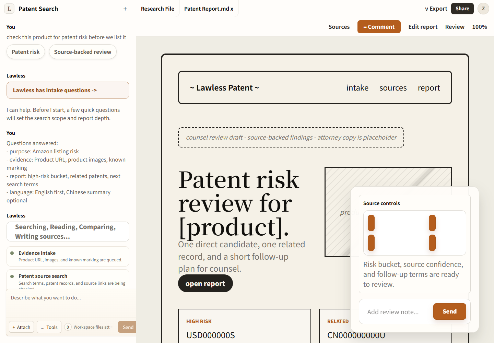

03 / 云端
把混乱的卖家材料整理成可审阅案件文件
云端工作台让卖家无需本地配置，就能上传材料、看到智能体进度、恢复会话，并审阅可保存的专利或 TRO 交付物。

跨境卖家不会配置本地智能体；他们需要把材料交进去，并能看到案件如何被推进到可下载的工作产物。
CaseWorkspace 统一上传、问卷、流式进度、会话恢复、交付物预览和 caseType 技能路由。
Patent 和 TRO 共用工作台但保持任务边界；TRO 专项评测仍薄于 patent search。

Core Claim
跨境电商卖家遇到平台冻结、TRO 或专利风险时，通常不会带着一个干净的法律问题进入产品。他们带来的往往是碎片：Amazon 或 Temu 的冻结通知、律所邮件、法院文件、商品截图、销售表、货源证明、一个从页面上复制下来的专利号，外加一句“我的资金被冻结了，现在怎么办？”
这种输入形态决定了产品不能只是一个聊天框。聊天框可以承接情绪和补充问题，但它很难成为案件记录；传统表单可以收集字段，但它要求用户在系统还没读材料之前，就先把法律事实分门别类。Lawless Cloud Workspace 的产品判断是：卖家侧法律 AI 的第一对象应该是案件工作区，而不是提示词。用户应该能把混乱材料放进去，看到系统如何组织它们，并在之后补充证据时继续同一个案件。
因此，这个项目最重要的实现不是某个炫目的模型回复，而是围绕文件、会话、进度、来源和交付物建立的可恢复工作区。智能体只有在这些上下文能保存、能预览、能恢复、能被人审查时，才真的对卖家和复核人有用。
核心循环：从材料到案件状态
这个 workspace 的用户循环可以概括为：
杂乱材料
-> 同步到案件输入
-> 启动受边界约束的智能体运行
-> 显示可理解的进度
-> 生成来源和交付物预览
-> 形成可复核报告
-> 恢复同一会话，继续补证这个循环比通用编码智能体更窄，但比固定法律问卷更能容纳真实输入。卖家不需要理解背后的工具、技能、模型或运行时；复核人则需要相反的东西：必须能看见用户上传了什么，系统生成了什么，来源轨迹在哪里，哪些结论还不应该被信任。
项目目前有两个主要 caseType：patent-search 和 tro。它们共用同一个工作区外壳，但任务合同不同。patent-search 侧更像证据检索和主张比对：产品材料、已知专利、数据库范围、报告模式会影响输出。TRO 侧更像冻结账户后的案件响应：通知来源、法院和案号、平台资金、涉案销售、毛利、缺失证据、路径选择和外发草稿都要被区分。
这个分层很关键。共享 UI 如果不小心，很容易把所有法律工作压平成“案件分析”。Lawless 的共享层只负责工作区机制；具体 caseType 负责技能、问卷、兜底提示词、交付物路径和报告完成标准。这样既能复用产品体验，又不会把不同法律任务混成一个模糊流程。
为什么旧形态会坏掉
这个问题的难点不只是法律推理，而是连续性。
TRO 案件里，少一个事实就可能改变实际路径：冻结金额、涉案商品销售额、毛利、是否向管辖州销售、是否收到 complaint、送达是否有效、原告律所、案号、货源授权证据，都会影响和解邮件、证据请求和律师复核的方向。专利风险也是一样：一张产品截图如果没有技术特征说明，风险判断会很弱；一个专利号如果没有和商品特征映射，也只是半条线索。
所以“生成报告”按钮太脆。一键报告会让系统看起来已经完成，但证据可能很薄。大问卷则在另一个方向上太硬：它要求用户先理解法律事实，再把事实填入字段。纯聊天虽然灵活，却不是好的案件档案；附件、引用、生成文件、缺失事实和追问会散在不同轮对话里。
Cloud Workspace 的做法是让每次运行都绑定到会话和案件目录。文件作为输入进入工作区，报告作为交付物返回，进度成为活动轨迹，右侧交付物栏显示当前交付物，用户不需要在聊天历史里翻找正式结果。
上传不是基础设施，它是法律产品的一部分
文件上传看起来像基础设施，但在这个产品里，它直接影响法律工作质量。卖家的截图、平台通知、PDF、DOCX、CSV、商品图片和销售导出，常常就是最好的证据。
当前上传路径支持分片，因为部署环境对请求体大小有约束。客户端把文件切成小块，服务端在 /home/user/case/inputs 里重新组装，并把这些文件写入案件输入目录。产品设置了单文件上限，并区分可搜索文件和可预览文本。用户看到的是 queued、uploading、uploaded、indexing、sync failed 这样的状态；案件记录里保存的是文件名、路径、大小、MIME 类型、是否可搜索、时间戳和索引状态。
这样做比把文件内容直接粘进提示词更可靠。系统可以区分用户可见消息和文件清单；复核人可以看到材料列表；交付物面板可以把输入、输出、来源和正式报告分开。对法律工作来说，这个边界本身就是产品价值。
进度流应该有用，而不是表演
Workspace 通过 SSE 式事件流展示运行过程：文本增量、推理更新、工具开始、工具输入、工具结果、沙箱就绪、交付物事件、引用、问题、完成和错误。产品没有把这些原始事件直接丢给卖家，而是把它们压缩成可理解的活动轨迹：准备工作区、上传证据、读取案件材料、搜索来源、更新工作区、准备报告、报告就绪、需要更多信息、需要注意。
这件事很重要，因为法律 AI 的信任常常被误解成“展示越多内部命令越可信”。但对非技术卖家来说，内部命令不等于可复核；对法律运营人员来说，真正需要的是交付物、来源和未解决问题。Lawless 把进度当作方向提示，而不是表演。用户应该知道系统是在读文件、找来源、等回答还是写报告；复核人应该能打开报告和来源；两者都不应该被迫阅读底层工具载荷。
产品还会过滤部分内部细节。路径、提供方、令牌、命令和低层执行词不会成为主体验。这个边界不是美化，而是把用户注意力留给案件工作。
交付物栏是聊天的另一半
右侧交付物栏让这个项目不只是聊天演示。生成的报告、上传证据、来源文件、JSON、CSV、HTML、Markdown、PDF、DOCX 和图片都会被分类成可预览交付物。报告排在输出、输入、来源和二进制文件之前；文本类交付物可以按 Markdown、HTML、JSON、CSV、代码或纯文本预览；图片、PDF、DOCX 在可能时走自己的预览类别。
这个模型改变了用户阅读结果的方式。智能体消息可以总结发生了什么，但报告交付物才是可恢复、可审查、可下载的正式工作成果。当智能体写出配置里的报告路径时，UI 会把报告标为 ready，并在工作区打开。如果运行没有产生预期报告，UI 可以显示消息和文件清单，但不能假装正式交付物已经存在。
来源预览也遵循同样原则。引用可以来自事件流，也可以从报告 Markdown 里抽取。抽取逻辑处理 Markdown 链接、裸 URL、编号引用和 Lawless 风格参考行，然后按 URL 去重并分配稳定编号。如果来源能嵌入，工作区就内嵌打开；如果 Google 或 Google Patents 这类站点阻止 iframe，UI 会说明预览不可用，并保留外部链接。
这是一条小但重要的诚实边界。来源打不开时，不应该显示空白面板，也不应该让用户以为系统已经验证过它。产品必须告诉复核人：预览不可用，但链接仍然可检查。
会话恢复是产品的记忆
判断一个页面是不是工作区，最好的测试是刷新之后发生什么。
当 URL 带有 sessionId 时，工作区会重新加载会话详情、沙箱 ID、上传文件、交付物、历史消息、已选技能、已加载技能和持久化活动轨迹。仍标记为 active 的活动会在恢复视图里合理收束；如果报告交付物存在，工作区会把它重新打开成文件标签，并设为当前预览；如果最后一条智能体消息有可展示答案，也会恢复到可见消息里。
这对卖家案件很实际。第一次运行可能只有平台冻结截图；第二次加 complaint PDF；第三次加 ASIN 销售导出和货源 invoice。工作区不应该要求用户每次从零开始复述。它应该把上一轮证据包、报告和缺口保存下来，让下一轮从同一案件状态继续。
同时，产品也保留了“新建会话”的逃生门。如果用户明确开始新案件，旧 URL 会话状态不会被悄悄恢复回来，避免用户想离开旧案却被 URL 拉回去。
TRO 路径：先形成案件状态，再谈邮件
TRO 工作流里，混乱的第一分钟就是产品的核心场景。卖家可能只上传一封律所邮件，然后说平台账户被冻结了。工作区的任务不是马上写和解邮件，而是先建立案件状态：被告是谁，哪个平台受影响，文件里出现什么案号和法院，涉及哪个 plaintiff 或律所，哪些 listing 被指控，是否有美国或管辖州销售，冻结了多少钱，缺什么证据。
TRO intake 配置对应这种领域形态：平台通知、律所邮件、summons、complaint、TRO order、涉案商品销售、货源证据、冻结账户、侵权立场、和解目标、已有律师和证据包。产品方向也很明确：一个工作区，一个输入面，一个持续演进的案件交付物；只有在事实足够清楚后，才出现路径选择。
这个顺序很重要。输出不应该急着把“发送和解邮件”当成主动作。邮件只是案件理解之后的一个交付物。更有价值的交付物是活的案件摘要：已知事实、未知事实、资金暴露、看过的文件、可选路径和下一步行动。
当前实现能证明共享工作台、TRO 路由绑定、问卷、技能绑定和交付物路径。它还不能证明 TRO 智能体已经能在真实卖家场景里稳定产出高质量路径卡、和解经济分析、证据请求和可供律师审查的邮件。下一步需要的是场景级评测。
专利路径：证据链更成熟
专利检索在这个代码库里的证据链更成熟。产品方向把专利工作区定义为输出优先：聚焦法律任务，接收产品和来源证据，运行真实提供方，生成结构化法律交付物，给出后续说明，并产出正式报告或 PDF 式结果。
相关验证也不只测 API，而是测产品表面：从首页打开工作区，从同一入口打开 TRO 路由，暂存文件证据，启动问卷，在研究文件和报告标签之间切换，把报告交付物渲染成文档，在报告预览和来源视图之间移动，导出报告，添加复核备注。布局验证还覆盖多种视口，检查溢出、容器约束、输入区留白、弹窗尺寸和重叠问题。
这些检查不能证明每个专利结论都法律正确，但它证明了一个更窄也更实用的点：用户可以从 intake 走到交付物复核，而不依赖隐藏的控制台路径。对卖家侧产品来说，UI 路径本身就是证据。如果系统只能通过内部脚本生成好报告，那它还不是面向卖家的产品。
这套结构带来的价值
Cloud Workspace 降低了卖家的配置成本。他们不需要本地环境、命令行或开发者陪同；他们需要的是登录、上传、等待、阅读、补证和回来继续。
同一结构也帮助法律或运营复核人。复核人可以检查输入交付物，打开正式报告，沿着引用看来源，读进度轨迹，并基于同一会话发起追问运行。系统把“模型回答了”变成一个更可审查的主张：这些文件被上传过，这次运行发生过，这个交付物被生成过，这些来源被抽取过，这些问题仍然不确定。
这个项目最稳定的技术思想不在模型本身，而在模型周围的环境：文件同步、按案件定制的提示词、受边界约束的技能、进度压缩、交付物分类、引用处理、来源预览、计费和会话门控、状态恢复。智能体负责灵活工作，工作区负责让灵活工作变成可以交接、可以复核、可以继续的案件状态。
证据边界
当前证据最强的是产品机制。实现支持 patent-search 和 tro 两个 caseType，通过共享路由和配置切换。上传文件会分片并进入案件输入文件夹。会话会保存引擎状态、上传文件、交付物、消息、已选技能和活动轨迹。UI 可以恢复这些细节。交付物客户端会分类报告、输入、输出、来源、二进制文件和预览类型。引用抽取覆盖 Markdown 链接、裸 URL、编号引用、Lawless 参考行、非 HTTP 链接拒绝和稳定引用数量限制。
专利表面的浏览器验证比 TRO 更完整。TRO 路由已存在，有自己的技能绑定、问卷和共享工作区入口，但结果质量仍需要更深的场景测试：它是否能正确抽取缺失事实，路径卡是否一致，草稿邮件是否引用案件事实，用户能否从困惑 intake 走到可审查下一步。
因此，这个项目不应被表述成“已经完成自动法律服务”。更准确的说法是：它构建并验证了一个云端案件工作区框架，能把杂乱卖家材料推进到可恢复、可预览、可复核的交付物；其中专利检索比 TRO response 更成熟，TRO 仍处在产品结构清晰、评测需要补强的阶段。
参考材料
- lawless-web-app/src/products/shared/case-workspace/caseWorkspaceConfig.ts
- lawless-web-app/src/products/shared/case-workspace/ui/CaseWorkspaceDesigns.tsx
- lawless-web-app/src/app/api/chat/route.ts
- lawless-web-app/src/products/shared/service/citationExtraction.ts
- lawless-web-app/tests/citationExtraction.test.mjs